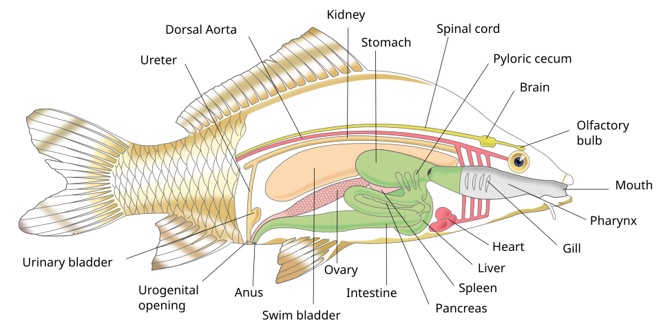
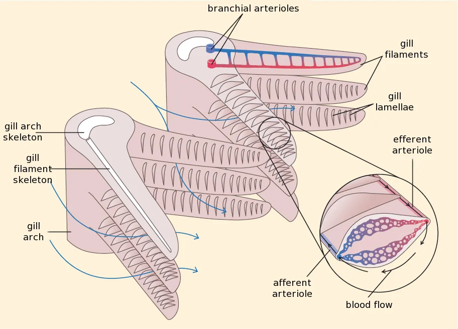
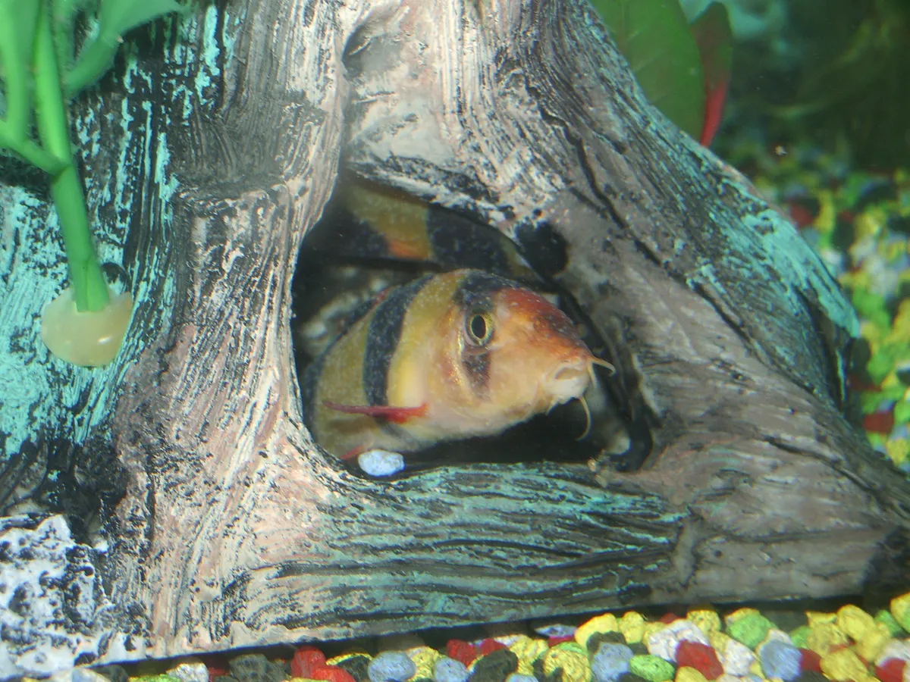

1. 全体像

魚類の内部器官の模式図。Sharon High School / Pixelsquid, Wikimedia Commons,
CC BY-SA 3.0魚類は脊椎動物の基本構造 (心臓・肝臓・腎臓・消化管・中枢神経) に、水中適応のための専用器官 (鰓・側線・鰾) を加えた設計。陸上脊椎動物と比べてコンパクトだが、機能の重みは大きく異なる。
| 部位 | 主機能 | 故障時の主な帰結 |
|---|
| 鰓 | 呼吸 / 浸透圧調節 / アンモニア排出 | 呼吸困難 / 塩バランス崩壊 / 急性中毒 |
| 鱗・粘膜 | 物理保護 / 抗菌バリア / 浸透圧管理 | 細菌・寄生虫感染 / 浸透圧ショック |
| 鰭 | 推進 / 姿勢 / ブレーキ | 遊泳不能 / 縄張り争い敗退 |
| 浮袋 | 浮力 / 一部魚種で聴覚補助 | 転覆病 / 中層維持不能 |
| 側線 | 水流・振動・捕食者検知 | 群泳同調不能 / 接近に気づかない |
| 心臓・血液 | 単循環で酸素を全身へ | 急性循環不全 / KHV類などの感染 |
| 肝臓 | 代謝 / 解毒 / 胆汁 | 脂肪肝 / 解毒能低下 / 黄疸的症状 |
| 腎臓 | 浸透圧調節 / 造血 / 免疫中枢 (頭腎) | 腎不全 / 造血障害 / 免疫低下 |
| 消化管 | 消化吸収 | 腸炎 / 消化不良 → 転覆病連鎖 |
| 脳・神経・感覚 | 行動 / 学習 / 産卵タイミング | 錯乱遊泳 / 縄張り維持不能 |
| 生殖腺 | 卵・精子の生成 | 卵詰まり / 不妊 |
2. 鰓 (えら) — 呼吸 + 浸透圧調節 + アンモニア排出

魚の鰓構造 (鰓弓・鰓弁・二次鰓弁/lamellae)。Anaxibia, Wikimedia Commons,
CC BY 3.0
鰓 (Gill)
呼吸器であり、塩分・アンモニア処理装置でもある「マルチ臓器」
機能
- ガス交換: 鰓弓→鰓弁→二次鰓弁 (lamellae) と階層化。二次鰓弁は細胞1層分の薄さで対向流交換 (countercurrent) により最大80%超のO₂抽出効率
- イオン調節: 鰓上皮の塩類細胞 (chloride cell) がポンプとなり、淡水魚は塩を吸収、海水魚は塩を排出
- 窒素排出: アンモニアの大半は鰓から直接水中へ拡散 (哺乳類は腎臓尿素として排出するのと対照的)
- pH/CO₂調節: 重炭酸イオンの交換で血漿pHを保つ
病態 — 機能しなくなるとどうなるか
- 白点病 (Ich): 寄生虫 Ichthyophthirius multifiliis が鰓上皮内に侵入。多数寄生で鰓蓋が閉まらず、呼吸面積が物理的に潰れて窒息死。1個体が24時間で数百〜数千の仔虫に増殖
- カラムナリス症 (鰓ぐされ): Flavobacterium columnare による細菌性鰓壊死。鰓弁が灰色化・崩壊して呼吸不能
- 鰓吸虫・ダクチロギルス類: 単生類が鰓に寄生、慢性的な鰓肥厚と粘液過剰
- 急性アンモニア中毒: 水質悪化で水中NH₃濃度が逆転すると排出できず逆流。鰓出血・頻呼吸・横転
- 酸欠: 高水温・有機物分解による溶存酸素低下 → 水面でハクハク (gulping)。魚の最初の SOS
- 塩バランス破綻: 鰓塩類細胞が傷害されると、淡水魚は組織が水でパンパンに膨張 (浸透圧ショック)、海水魚は脱水
致命度: 鰓は魚で最初に致命的になる臓器。再生はある程度可能だが、構造破壊が広範囲に及ぶと取り戻せない。釣り上げた魚を素手でガッチリ掴むと鰓蓋を曲げ、リリース後に呼吸不全で死亡することがある (キャッチ&リリース時はランディングネットで包む・鰓蓋に指を入れない)。
3. 鱗・粘膜 — 物理&化学バリア

白点病 (Ich) に感染したクラウンローチ。体表に白い粒状の寄生体 trophont が見える。粘膜が剥がれた個体ほど寄生されやすい。
ML5, Wikimedia Commons, パブリックドメイン
鱗 (Scale) と粘液層 (Mucus)
魚の「皮膚」相当。物理保護と免疫の最前線
機能
- 物理保護: 鱗は真皮由来の硬い保護板 (円鱗・櫛鱗・楯鱗のタイプ)。捕食者の歯・岩への擦過に耐える
- 水力学的平滑化: 粘膜+鱗で水の抵抗を下げ、泳ぎを効率化
- 抗菌バリア: 粘液にはリゾチーム・抗菌ペプチド・免疫グロブリンIgM/IgTが分泌され、細菌・原虫の侵入を防ぐ
- 浸透圧管理: 粘液層は不感蒸散 (水・イオンの流出) を抑える境界層
- 個体識別: 種特異的な化学物質 (フェロモン) が粘膜から拡散し、群れの仲間認識・警報物質 (Schreckstoff) として働く
病態
- 穴あき病 (Ulcer): 常在菌 Aeromonas hydrophila/salmonicida が、ストレス・粘膜剥離をきっかけに増殖。鱗が脱落して体に穴が開いた状態に。免疫低下が真の引き金
- 立鱗病 (松かさ病, Dropsy): エロモナス系の感染で、鱗が松ぼっくりのように逆立つ。腹水・浮腫を伴い予後不良
- 水カビ病 (Saprolegnia): 真菌が傷口・受精卵に綿状に付着。低水温時に多発
- 白点病: 上記の通り、皮膚にも侵入。鰓と並ぶ二大被害
- 網ハンドリング傷: 強く触る・乾いた網ですくうと粘膜が剥がれ、48時間以内に細菌感染が始まる
- 浸透圧ショック: 大規模な鱗欠損で淡水魚は急に水を吸い込んでしまう (組織浮腫)
釣り人の実用知: リリース時は濡れた手で短時間で扱う。乾いたタオル・乾いた素手は粘膜を剥がす最大の元凶。「ハッキリ言うと、5秒以上空気にさらしたヤマメ・イワナはそれだけで生存率が低下する」とされる。
4. 鰭 (ヒレ) — 推進・姿勢・ブレーキ
鰭 (Fin)
「水中での運動制御の100%を担う」器官群
[側面図]
背鰭 (回転抑制・姿勢保持)
↓
━━━━━━━━━━━ 脂鰭 (サケ科のみ、機能は議論中)
● △◇╲ ╲ 尾鰭 (主推進)
/ \ ╱ ╲ ╲
胸鰭 腹鰭 臀鰭 (姿勢)
(前進・後進・ (姿勢補助)
ブレーキ・
ホバリング)
機能
- 尾鰭: 主たる推進エンジン。形状で速度・持久・機動性が決まる
- 胸鰭: 前進・後進・ブレーキ・ホバリング・斜め舵
- 背鰭/臀鰭: 体軸の回転 (yaw/roll) を抑制し直進安定性を確保
- 腹鰭: 微細な姿勢補正、グッピー・モーリー雄では交尾器 (gonopodium) に変形
- 脂鰭: サケ科の機械受容器説あり。乱流検知に貢献している可能性 (養殖でカットされる対照実験)
- ディスプレイ: 婚姻期の縄張り誇示・求愛 (背鰭・胸鰭の伸張)
病態
- 尾ぐされ病 (Fin rot, カラムナリス): Flavobacterium columnare 感染。鰭先が白濁→溶ける→裂ける→根元まで進行。付け根まで達すると再生不可
- 水カビ病: 鰭の傷口に綿状の白いコロニー
- 鰭欠損: 縄張り闘争・捕食追跡で失う。基部が残れば数日〜2ヶ月で再生 (ブラステマ細胞が元形を記憶)。基部から欠ければ恒久障害
- 脂鰭カット: 養殖魚の標識として全切除されることがある。これにより放流魚と在来魚の区別が可能 (河川調査で利用)
- 遊泳異常: 鰭損傷で姿勢制御を失うと、捕食回避・産卵行動・縄張り維持ができなくなり淘汰される
5. 鰾 (うきぶくろ) — 浮力 + 一部聴覚
鰾 / 浮袋 (Swim bladder)
中性浮力を保つ「内蔵バルーン」、コイ科では聴覚補助も担う
機能
- 浮力調節: ガス (主に酸素) の量を調節し、その水深での比重を1.0に近づける。これで鰭を動かさず中層を維持できる
- 有管魚 (physostomous): コイ・ナマズ・サケ科は鰾と食道が細い管 (気道管) で繋がる。口から空気を吸って充填、不要分は口/腸から排気
- 無管魚 (physoclistous): スズキ・ハゼ等は管なし。鰾内のガス腺と再吸収体で能動的に出し入れ
- 聴覚補助: コイ・ナマズではウェーバー器官という骨小片の連鎖で鰾の振動を内耳に伝える。低周波感度が極めて高い (人間より広い帯域)
- 発声: 一部魚種 (ニベ科・タラ科) は鰾を太鼓のように振動させ求愛・威嚇音を出す
病態
- 転覆病 (Buoyancy disorder): 浮袋制御筋・神経の異常で姿勢を失う。横転・上下逆転・水面浮上したまま戻れない・底に沈んだまま等。金魚に多い。原因は消化不良・低水温・細菌感染・遺伝的体型 (丸手品種) の複合
- 消化不良連鎖: 有管魚では腸ガスが食道経由で鰾を圧迫 → 直接的な浮袋機能障害。絶食で改善することが多い
- ガス病 (Gas bubble disease): 過飽和の溶存ガス (水温急上昇・滝の白泡下など) で血中・組織に気泡が生じ、目・鰭・血管に微小気泡。急減圧で釣り上げた深海魚で目が飛び出すのもこれ
- 急減圧症 (Barotrauma): 深場から急に水面まで上げた魚 (バス・ハタ系) は鰾が膨張して口から飛び出す。リリースしても潜れず死亡
- 細菌性気胞炎: 鰾内壁の感染で体液貯留、浮力制御不能
6. 側線 (ラテラルライン) — 水の動きを「聴く」
側線系 (Lateral line system)
魚の感覚の中で側線+嗅覚で情報の7〜8割を担う
機能
- 水流検知: 体側の側線管を縦走する神経丘 (neuromast) がカップラ (ゼリー状の毛束) で水流の偏りを検知
- 振動・低周波: 100Hz以下の水中振動を取得。鰾と組み合わせると広帯域聴覚になる
- 群泳同調: 仲間の動きを 0.05秒オーダーで追随。視覚遮断でも群れが崩れないのは側線の貢献
- 捕食者・障害物検知: 接近物が水を押す圧力波を捉える。盲目化したカジカも側線で生存できる
- 電気感覚: 一部 (ナマズ・サメ・エイ) はロレンチーニ器官として発展、筋肉電位や地磁気を感知
病態
- 側線穿孔症 (Hole-in-the-Head, HLLE): 側線部の神経丘が壊死し穴が開いて見える。シクリッド類で多発。原因は栄養欠乏 (ビタミン・ミネラル)、活性炭による微量元素ロス、ヘキサミタ寄生説
- 機械損傷: 過密水槽・暴れ・落下で物理的に欠損。再生はあるが範囲広いと回復不全
- 慢性ストレス: コルチゾール慢性高値で側線神経丘の感受性が低下、群れ行動・回避反応が鈍る
- 農薬・界面活性剤: 神経丘表面の有毛細胞は化学障害に弱く、環境汚染の早期指標として用いられる
- 影響: 側線が機能しないと捕食回避・群泳・縄張り維持が同時に劣化、結果として被食率が跳ね上がる
7. 心臓と血液 — 単循環
心臓 / 血液系 (Heart / Circulation)
単循環 (Single-pass): 体→心臓→鰓→体 と一方通行
機能
- 1心房1心室+静脈洞+動脈円錐の単純構造。哺乳類のような肺循環/体循環の二系統はない
- 順路: 全身の静脈血が静脈洞→心房→心室と流れ、鰓へ送られて酸素化。鰓を出た動脈血はそのまま全身へ
- 欠点: 鰓を一度通った血液は圧が下がるため、体組織への酸素供給は哺乳類より低圧・低速。激しい持続運動には不向き
- 赤血球は有核(哺乳類は無核)。長寿命だが酸素運搬効率は近似
- 体温: ほぼ周囲水温と同じ (例外: マグロ・ホホジロザメは部分的内温)
病態
- 釣り上げによる心臓ストレス: 急激な運動と低酸素で乳酸が蓄積、リリース後に遅延死亡 (delayed mortality) を起こす。冷水性のヤマメ・イワナでは特に顕著
- KHV (コイヘルペスウイルス) 病: コイ専属、鰓・腎臓・心臓に重度炎症、致死率高い (国内法定家畜伝染病)
- VHS (ウイルス性出血性敗血症): サケ科を含む幅広い種に感染、心臓・筋肉・腎臓の出血
- IPN (伝染性膵臓壊死症): サケ科稚魚に多い。心臓・膵臓・腎臓の壊死
- 急性低酸素: 高水温時 + 持続運動で心臓に過剰負荷、不整脈→停止
- 貧血: 寄生虫 (吸虫・ヒルetc.) や栄養欠乏で赤血球が減少、活動低下
8. 肝臓 — 代謝・解毒・胆汁
肝臓 (Liver) / 一部に肝膵臓
栄養代謝と解毒の中央処理装置
機能
- 糖・脂質・タンパク代謝: 食物由来の栄養を貯蔵・分配
- 解毒: 環境毒物 (重金属・農薬・アンモニア) を中和。哺乳類のような尿素回路は弱く、窒素はアンモニアのまま鰓へ送る種が多い
- 胆汁生成: 胆嚢 (一部魚種) で濃縮、脂質消化を助ける
- 脂質貯蔵: 一部の種 (タラ・サメ) は肝油として大量の脂質を貯める。タラ肝油はビタミンA/D源として歴史的に重要
- 免疫補助: クッパー細胞様の貪食細胞が血液中の異物を処理
病態
- 脂肪肝 (Fatty liver): 高カロリー飼料・運動不足・遺伝で過剰な脂質が蓄積。養殖魚に頻発し、肝細胞機能低下・解毒能低下
- 肝萎縮: 慢性的な栄養欠乏・寄生虫で肝が小さくなり代謝能低下
- 肝吸虫: 一部の二生吸虫が胆管に寄生し炎症
- 毒物急性中毒: 銅・アンモニア・農薬の急性曝露で肝壊死。釣り場の事故 (除草剤流入等)
- マイコトキシン: 餌中のカビ毒 (アフラトキシン等) で肝発がん
- 影響: 解毒能が落ちると軽微な水質悪化でも致命的になる連鎖を生む。「肝臓を見ろ」は獣医・水産研究者の合言葉
9. 腎臓 — 浸透圧調節 + 造血 + 免疫
腎臓 (Kidney) — 頭腎 + 後腎
「腎+脾+骨髄」を兼ねる魚特有のマルチ臓器
機能
- 頭腎 (Head kidney): 体腔前方、心臓近傍。造血 (赤血球・白血球) と免疫の中枢。哺乳類の骨髄+副腎+リンパ節相当
- 後腎 (Trunk kidney): 体腔背側を縦走する細長い臓器。浸透圧調節を主に担う
- 淡水魚の戦略: 体液より低い環境で「水を排出+塩を保持」。希薄な大量の尿を作る
- 海水魚の戦略: 体液より高い環境で「水を保持+塩を排出」。少量の濃い尿、塩は鰓塩類細胞からも排出
- 降海/遡上: サクラマス・ウナギなどは生涯で淡水/海水を切り替えるため、腎臓と鰓のイオン処理機構を切り替える (smoltification)
- コルチゾール (corticosteroid) 産生: 頭腎のinterrenal組織がストレスホルモンを分泌 (哺乳類の副腎皮質に相当)
病態
- 細菌性腎臓病 (BKD): Renibacterium salmoninarum。サケ科の重大疾病、頭腎に肉芽腫形成
- 渦鞭毛虫症 (PKD/PKX): Tetracapsuloides bryosalmonae。後腎肥大、サケ科の慢性致死性疾病
- 多嚢胞性腎臓: 遺伝・環境因で嚢胞形成、機能低下
- 急性腎不全: 重金属・農薬・極端な水温/塩分変化で急性壊死
- 免疫破綻: 頭腎機能が落ちると造血・免疫が同時に崩れ、二次感染で死亡しやすい
- 慢性ストレス連鎖: 過剰なコルチゾール分泌で白血球機能・成長・繁殖が同時に抑制される。慢性的な過密飼育の典型像
10. 消化管 — 食道〜胃〜腸〜肛門
消化管 (Gastrointestinal tract)
無胃魚・有胃魚で大きく異なる多様性
機能
- 口→咽頭→食道→胃→幽門垂→腸→直腸→肛門
- 胃の有無: コイ科・ハゼ科・カワハギ等は胃が無い (無胃魚 stomachless)。腸が直接膨らんで貯留
- 幽門垂 (Pyloric caeca): 胃と腸の間の盲嚢。表面積を増やすのと消化酵素分泌の役目。サケ科で多数発達 (200〜300本)
- 食性の多様性: 草食魚は腸が長い (アユで体長の3倍)、肉食魚は短い (体長の半分以下)。これは進化の典型例
- 歯: 顎歯・咽頭歯・舌歯の組合せ。コイ科は咽頭歯で硬い貝・植物を砕く
病態
- 消化不良: 過剰給餌・低水温・低酸素で消化が止まる。有管魚では腸ガス→鰾→転覆病へ連鎖
- 腸炎 (Enteritis): 細菌・ウイルス・寄生虫で腸壁炎症、便がスケスケ・粘液便
- IPN (伝染性膵臓壊死): サケ科稚魚で消化管・膵臓・肝の壊死
- 条虫症 (Tapeworm): 腹腔内に巨大化、栄養奪取、痩せ症状
- 過剰絶食: 数週以上続くと脂肪肝の動員 → 肝障害 → 多臓器障害
- 異物嚥下: 釣り針・テグス飲み込み、腸閉塞・穿孔
11. 脳・神経・感覚 — 行動と学習の基盤
脳・神経・感覚器 (CNS + Sensory)
陸上脊椎動物と比べ感覚のウェイトが異なる
機能
- 脳の主要部: 嗅葉・終脳・視蓋 (中脳)・小脳・延髄。視蓋が大きいのが特徴 (視覚と空間処理の中央)
- 嗅覚: 鼻腔の嗅上皮で水溶性分子を検知。サケの母川回帰は嗅覚記憶
- 視覚: 種により4色型 (UV含む) もある。ただし濁水ではほぼ機能しない
- 味覚: ナマズ類は体表・ヒゲ・ヒレに味蕾が分布、全身が舌のような状態
- 記憶・学習: 縄張り位置・捕食者の顔・餌のタイミングを数週〜数ヶ月単位で記憶。「金魚の3秒記憶」は俗説で否定済み
- 痛覚: 鰓・口・体側に侵害受容器 (nociceptor) があり、痛み様反応を示す。モルヒネで行動が回復することも実証 (Sneddon 2003系列)
病態
- 急性ストレス → コルチゾール急上昇: 釣り・捕獲・移動で分単位でホルモン上昇。短期的にはエネルギー動員に有利だが、釣られた魚はリリース後30分〜数時間 SOS 状態
- 慢性ストレス: コルチゾール持続高値 → 白血球機能低下、生殖ホルモン抑制、成長抑制。慢性的に痩せて感染しやすくなる
- 渦鞭毛虫脳症 (Whirling disease): Myxobolus cerebralis がサケ科稚魚の頭部軟骨を侵し、平衡神経破壊。クルクル回って泳ぐのが名の由来
- VHS / IHN: サケ科ウイルスで脳炎・出血
- 低酸素脳症: 鰓障害から脳までO₂が届かず錯乱
- 水質pH急変: ニューロン興奮性異常で痙攣・横転
- 視神経損傷: 眼球破裂は魚では再生しない (甲殻類が眼柄ごと再生するのと対照)。視力喪失は致命的
12. 生殖腺 — 精巣 / 卵巣
生殖腺 (Gonad)
繁殖期に劇的にサイズと機能が変動
機能
- 精巣・卵巣: 体腔上部、脂肪体と並ぶ。繁殖期には体重の20〜30%に達することもある
- 性成熟: 内分泌軸 HPG axis (視床下部-下垂体-生殖腺) が制御。日長・水温が引金
- 性転換: ハタ・ベラ・クマノミは生涯で性別が変わる。社会的順位が転換のスイッチ
- 大量排卵: マンボウ3億卵、マグロ数千万卵など。生残率の低さを補う戦略
- 口内保育・卵保育: シクリッド・タナゴ・トゲウオなど多様な親保護行動
病態
- 卵詰まり (Egg-binding): 産卵相手・適切な水温・基質がないまま発卵が進むと卵巣に滞留して炎症・腹水・敗血症
- 性成熟異常: 環境ホルモン (エストロゲン様化学物質) で雄の精巣に卵胞 (intersex)。河川下流の環境指標生物として研究
- 過剰繁殖負担: ヤマメ・サクラマス雄は産卵後に死亡することが多い (1回繁殖型 semelparous)。雌は2〜3回繁殖可能 (iteroparous)
- 体力消耗: 産卵後 (post-spawn) のサケ科は急激に痩せ・体色変化 (婚姻色の崩壊)、免疫低下 → 二次感染で死亡
- 放流の遺伝撹乱: 養殖系統と野生系統の交雑が生殖適応度を下げる (アウトブリーディング・デプレッション)
13. ストレス系 — HPI軸という見えない致命傷
魚の HPI軸 (Hypothalamus-Pituitary-Interrenal axis) は哺乳類の HPA軸 に相当する。視床下部CRH → 下垂体ACTH → 頭腎の interrenal組織がコルチゾールを分泌。短期は適応的だが、慢性化で全身に影響する。
| 段階 | 時間スケール | 主な変化 | 影響 |
|---|
| 一次反応 | 秒〜分 | カテコールアミン (アドレナリン) | 心拍up・血流再分配・素早い闘争逃走 |
| 二次反応 | 分〜時間 | コルチゾール上昇 | 血糖上昇・浸透圧調節支援・免疫一時抑制 |
| 三次反応 | 日〜週 | 慢性高コルチゾール | 成長抑制・生殖抑制・免疫破綻・感染症発症 |
- 釣り (キャッチ&リリース): 闘魚時間が長いほど一次・二次反応が大。水温が高いほど遅延死亡率が上昇 (16℃以下推奨、20℃超では極力短時間で離脱)
- 移送・水換え・過密飼育: 慢性ストレスの典型。観賞魚で「水替え後にバタバタ死ぬ」のは三次反応で免疫が落ちていたところに細菌が増殖した結果
- 麻酔・神経締め: 食用処理ではストレスホルモン上昇前に即死させると味が良い。延髄破壊+血抜きが「神経締め」の論理
14. 出典
総説・解剖
感覚・神経・痛覚
病気・病態 (魚病)
ストレス・コルチゾール
再生・治癒メカニズム (関連)
関連レポート (リポジトリ内)
{kind=link}